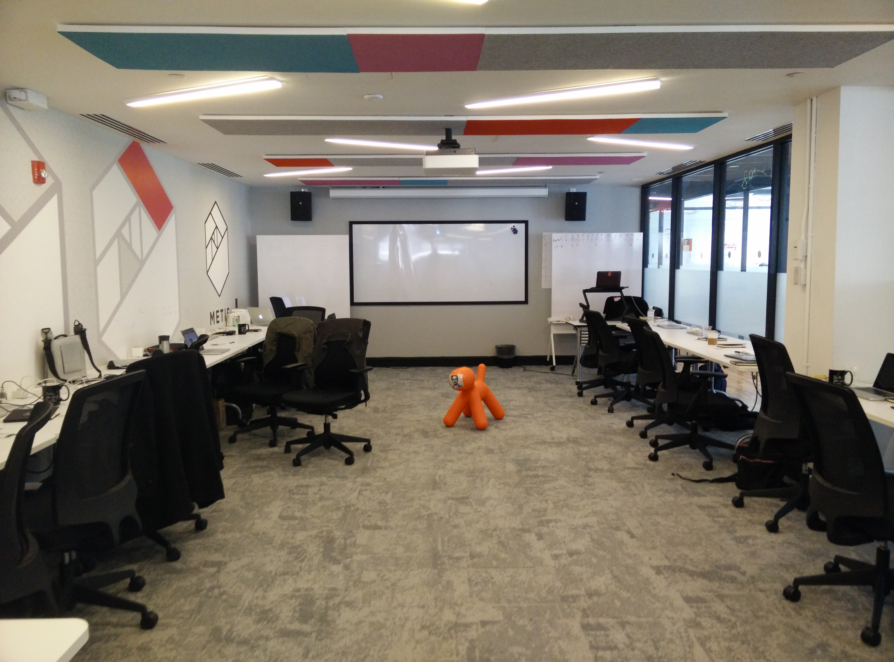
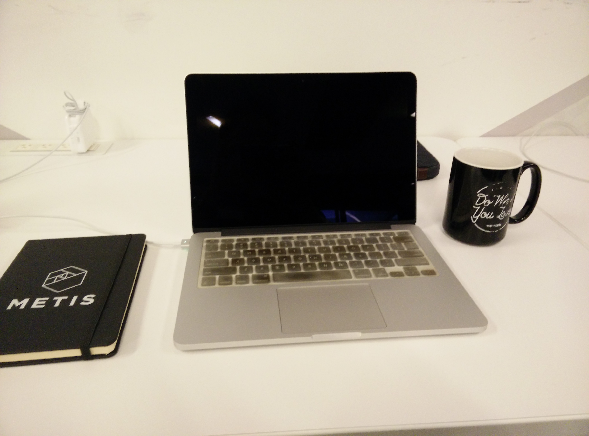

Day 1 at Metis
About 1 month ago, I moved back to the US after nearly 7 years in Seoul, South Korea. For my first 5 years in Korea, I was teaching high school math, science, statistics and whatever other classes they wanted to throw my way. While it was a joy to teach rebellious teenagers going through the awkwardness of puberty, I made a decision to leave the profession and move towards programming / web development and work with a marginally more grown up version of these teengagers :P After a summer at Coding Dojo in Silicon Valley, I came back to Korea and found a job as a web developer at a Korean design firm. After over a year there I moved to an Asian Entertainment startup and also spent time at a non-profit crowdfunding platform, Five Two Foundation. Now, I’m looking to transition my career yet again. Today, I officially started at Metis Data Science Bootcamp in NYC.
For the next 12 weeks, I will be spending 50+ hrs/week at Metis learning the ins and outs of Data Science. My cohort is an ethnically diverse group of 18 who are also looking to get into the data science. Many of the students have Masters/PHD degrees and are very accomplished in their respective fields, while others are younger folks with a fire to learn; I think I definitely fall in the latter.
Now what is a data scientist? Well basically there’s no easy definition because it’s a field that is still relatively new and is constantly changing. If someone asks me, I often give a different answer every time. Basically data science is at a cross section between programming, math/statistics and specific subject area expertise. So Data Scientists similarly need to have experience in all 3 of these areas. We basically figure out how to solve problems using data. This includes figuring out what exact problem we are solving, how to collect the relevant data, how to prepare that data for analysis, how to analyze that data, and then how to interpret that data.
During the first day, we went through orientation and then started diving right into some group exercises to get our brains going. In the afternoon, we got into Python and some of the other tools we’ll be using throughout the camp. It was an intense first day, but definitely fun and exciting. I look forward to the rest of the bootcamp and will try to update this as often as I can. Here are a couple pictures from today.

